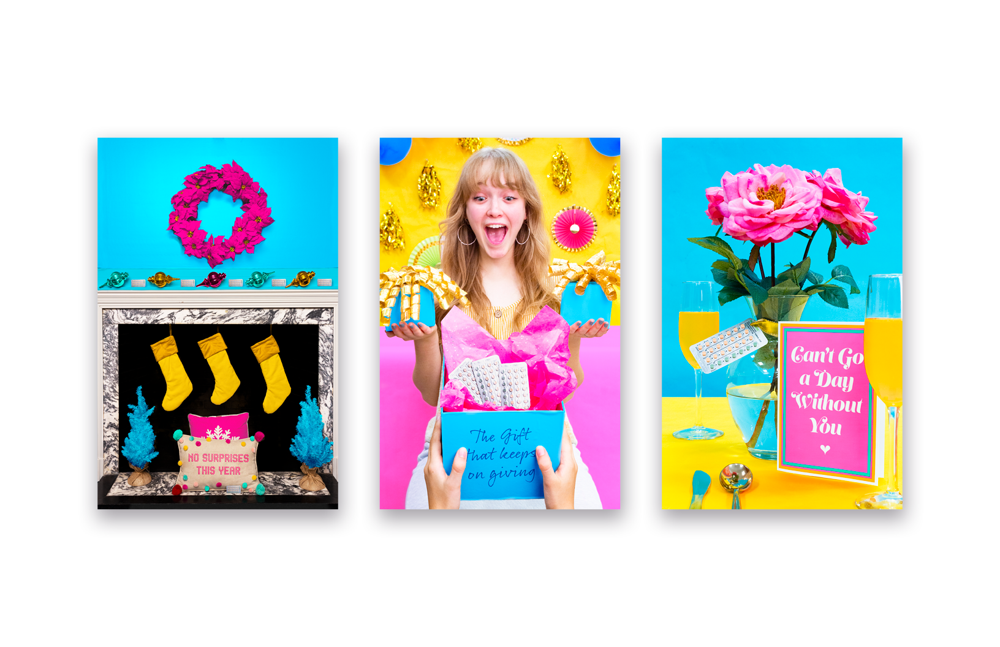
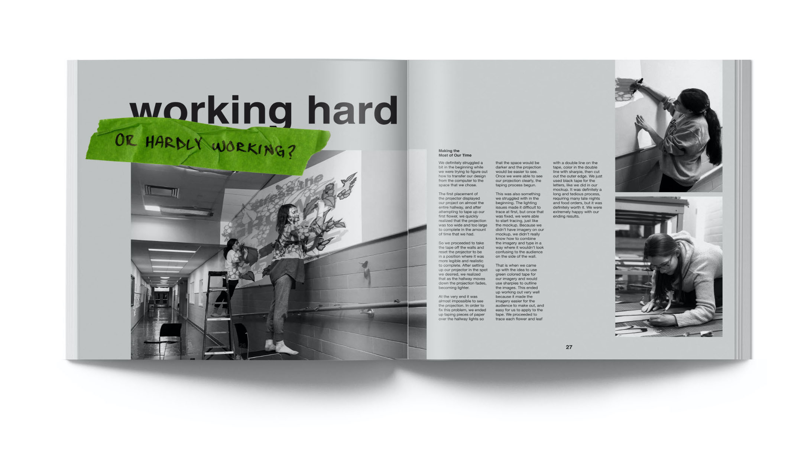
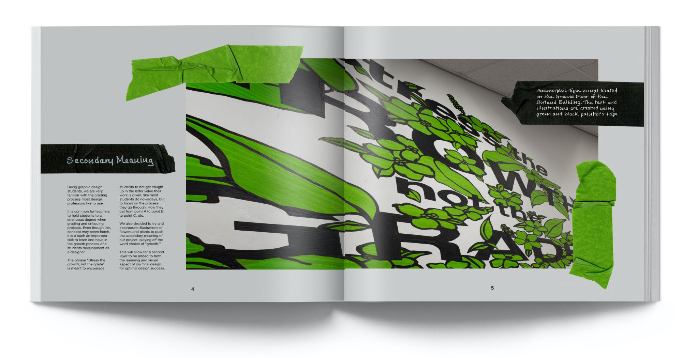

Graphic Design Work
Studying Graphic Design at Penn State has taught me so much about giving and receiving constructive criticism and developing concept-driven work. Below are a few of my favorite pieces I've created here.
Photography
Layout
Typography
Digital & Physical Craft


Rogue Magazine
For this project, I was tasked with designing a couture fashion magazine loosely based on the style of a film. I chose the 2016 film Rogue One: A Star Wars Story, and was responsible for finding and photographing a model, assembling multiple outfits, designing a 6-spread layout, and handcrafting the magazine.

The Pill Club Social Campaign
The goal of this project was to create a three-poster social campaign to promote a company using stylized and figurative imagery. I chose to do a campaign for The Pill Club, a subscription service that delivers birth control pills along with a care package of useful items.

